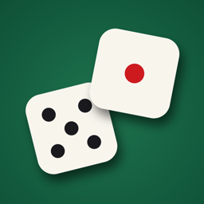

Support
Dice is a 3D dice roller with real physics: drag across the table to lift and fling the dice, shake the phone like a dice cup, tap a die to hold it.
Write to us on GitHub: describe what happened, your iPhone model and iOS version.
Frequently asked
How do I throw harder? Pull your finger further before letting go, or raise Throw power in Settings.
How do I keep a die? Tap a resting die. It gets an orange ring and stays put on the next roll. Tap it again, or use the lock button, to release it.
No vibration? Check Settings in the app: Vibration and its sub-switches, and the Strength slider.
No sound? Sound follows the ring/silent switch of your iPhone. Turn silent mode off, and check Sound in the app settings.
Поддержка
Dice — объёмные кубики с настоящей физикой: проведите по столу, чтобы поднять и бросить кубики, трясите телефон как стаканчик, коснитесь кубика, чтобы оставить его.
Напишите нам на GitHub: что произошло, модель iPhone и версия iOS.
Частые вопросы
Как бросить сильнее? Оттяните палец дальше перед тем, как отпустить, или прибавьте «Силу броска» в настройках.
Как оставить кубик? Коснитесь лежащего кубика: появится оранжевое кольцо, и следующий бросок его не тронет. Повторное касание или кнопка с замком его отпускает.
Нет вибрации? Проверьте в настройках приложения «Вибрацию», её переключатели и ползунок «Сила».
Нет звука? Звук подчиняется переключателю беззвучного режима iPhone. Выключите беззвучный режим и проверьте «Звук» в настройках приложения.